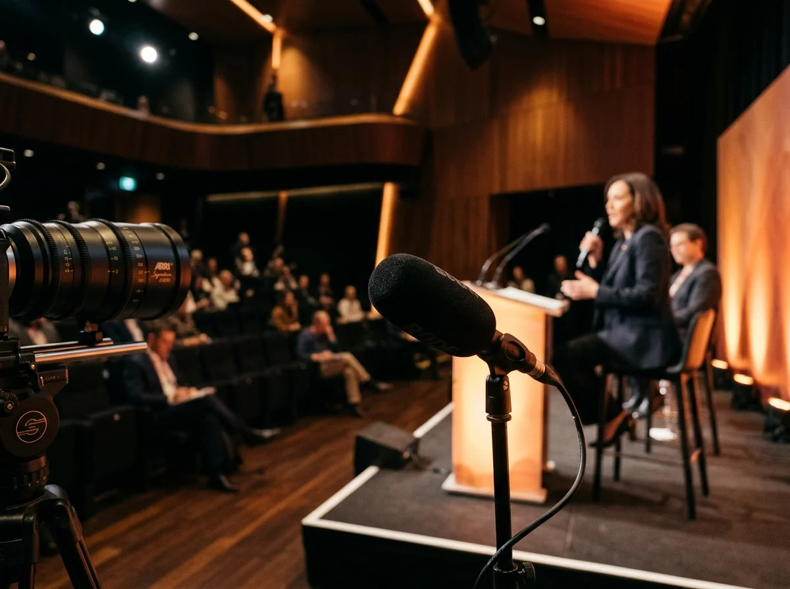
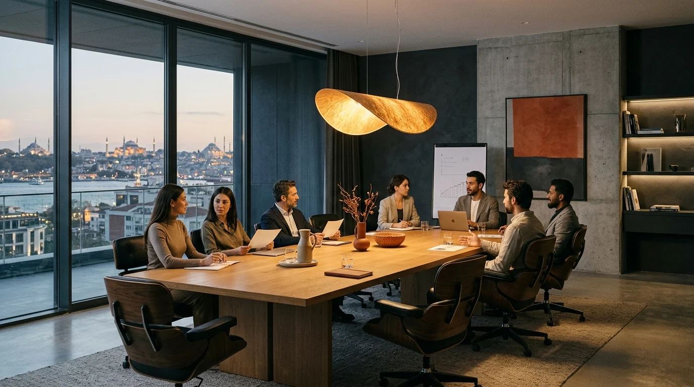

BODY WORLDS: Orijinal Vücut Dünyası Sergisi İstanbul Lansmanı ve PR Yönetimi.

Yüksek Duyarlılık ve Bilimsel Doğruluk Dengesi
Dr. Gunther von Hagens'in plastinasyon tekniğiyle hazırlanan ve dünya genelinde 50 milyondan fazla kişi tarafından ziyaret edilen BODY WORLDS: Orijinal Vücut Dünyası – Yaşam Döngüsü Sergisi, gerçek insan bedenlerinin gönüllü bağış süreciyle sergilenmesi nedeniyle tüm dünyada olduğu gibi Türkiye'de de yüksek toplumsal hassasiyet ve yoğun merak uyandıran bir projeydi.
Temel iletişim zorluğu iki eksende toplanıyordu: Bir yandan serginin sansasyonel ya da yanlış anlaşılabilecek bir çerçeveye sıkışmasını önleyerek etik bağış protokollerini, tıp eğitimi ve sağlıklı yaşam bilincine katkısını şeffaf biçimde anlatmak; diğer yandan ise tıp dünyasından ailelere, gençlerden kültür-sanat takipçilerine kadar geniş bir ziyaretçi kitlesinde güçlü bir ziyaret motivasyonu yaratmaktı.
Bilim, Sağlık ve Kültür Eksenli 360° İletişim Mimarisi
3D İletişim Hizmetleri olarak, sergi açılışından aylar önce proaktif bir algı ve risk yönetimi haritası oluşturduk. İletişim dilimizi "insan bedeninin mucizesini, sağlıklı yaşlanmayı ve yaşam döngüsünü keşfetme" ana fikri üzerine inşa ettik.
İlk aşamada Türkiye'nin önde gelen tıp fakülteleri, anatomi profesörleri ve sağlık uzmanlık dernekleriyle bilimsel paydaş köprüleri kuruldu. Ardından sergi küratörü Dr. Angelina Whalley'nin katılımıyla üst düzey bir Basın Ön Gösterimi (Press Preview) ve birebir özel röportaj serisi organize edildi. Ana akım haber bültenlerinden kültür-sanat eklerine, sağlık programlarından dijital kanaat önderlerine kadar her mecra için ayrı içerik açıları ve özel editoryal basın kitleri hazırlandı.
"Bilimsel şeffaflığı ve insana saygıyı iletişimin merkezine koyarak, sergiyi İstanbul'un en çok konuşulan kültür ve eğitim deneyimlerinden birine dönüştürdük."
Ölçülebilir Erişim ve Pozitif Kamuoyu Algısı
Açılış öncesi kurgulanan proaktif iletişim stratejisi sayesinde sergi, ulusal televizyon kanallarının ana haber bültenlerinde, önde gelen gazetelerin kültür-sanat ve sağlık sayfalarında ve dijital mecralarda %96'nın üzerinde pozitif/bilgilendirici tonda yer buldu.
350+
Ulusal TV, yazılı basın ve dijital medyada doğrudan haber ve özel röportaj yansıması
120+
Basın ön gösterimi ve VIP açılış gecesinde ağırlanan gazeteci, bilim insanı ve kanaat önderi
%96+
Bilimsel, eğitici ve sağlıklı yaşam odaklı pozitif medya ton oranı
Lansman ve Sergi Atmosferinden Kareler


